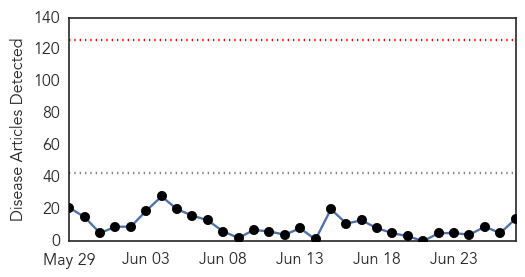
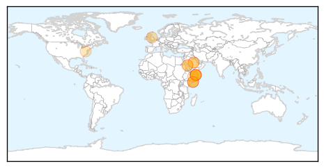

30 Day Trends
Web: 0 alerts, 0 warnings
Twitter: 0 alerts, 0 warnings
Top Articles:
- 0.999
- Four New Cases Of MERS CoV Infection Reported In Saudi Arabia
- 0.992
- Saudi Arabia reports increase in MERS incidents, deaths
- 0.986
- Saudi Arabia reports MERS case, weighs camel import ban
- 0.975
- Gulf Daily News World News Mers linked to African camels
- 0.971
- Saudi Arabia suspects African camel is source of MERS virus
- 0.901
- Saudi Arabia Plans to Ban Camel Imports
- 0.896
- Exclusive - In virus hunt, Saudi Arabia suspects African camel imports
- 0.880
- In virus hunt, Saudi Arabia suspects African camel imports
- 0.874
- Saudi suspects Africa camels may be Mers source
- 0.868
- Saudi Arabia suspects African camels for MERS virus spread
- 0.863
- Saudi authorities testing imported camels at sea ports
- 0.860
- In virus hunt, Saudi Arabia suspects African camel imports
- 0.859
- EXCLUSIVE-In virus hunt, Saudi Arabia suspects African camel imports
- 0.791
- As Pig Virus Spreads, The Price Of Pork Continues To Rise
Top Tweets:
-
No tweets found for Jun 27, 2014
Web/News Articles
Tweets

Article Locations
Article Confidences